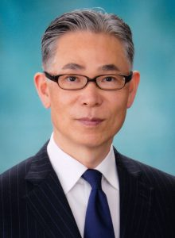

ご挨拶

第146回西日本整形・災害外科学会学術集会
会長 西田 康太郎
（琉球大学大学院医学研究科 整形外科学講座 教授）
会長 西田 康太郎
（琉球大学大学院医学研究科 整形外科学講座 教授）
このたび、2023年11月3日(金)・4日(土)の両日にわたり、沖縄県宜野湾市の沖縄コンベンションセンターにて第146回西日本整形・災害外科学会学術集会を開催させていただくことになりました。前回私ども琉球大学が担当させていただいたのが、2014年の第128回学術集会でしたので、実に９年ぶりの沖縄開催となります。
特別講演１としては、膝関節／スポーツ／再生医療で御高名な、神戸大学整形外科 教授の黒田良祐 先生にご講演いただきます。特別講演２としては、TIME Magazineの「2011年のベスト発明50」の1つに選ばれたPossessedHandの研究と開発で御高名な琉球大学工学部知能情報コース教授、H2L株式会社 代表取締役社長の玉城絵美 先生にご講演いただきます。主題は、超高齢社会を迎え、西日本地区では特に問題となっている骨粗鬆症と、それに関連する整形外科疾患をはじめ、各分野のトピックスを網羅した内容にいたしました。特別企画として、「女性整形外科医活躍への取り組み」と題し、女性医師を含む上級医と若手医師２名でデュエット形式でのプレゼンを予定しています。さらにTEDのようなスーパープレゼンテーション形式で「心に残った症例」を提示いただくことにいたしました。
本学術集会のメインコンセプトは「整形外科を熱く語ろう！」とさせていただいております。３連休の前半を利用した開催となり、学術集会期間中はしっかりと整形外科を熱く語っていただき、後半は観光地沖縄を満喫いただきたいと思っております。沖縄の魅力を感じていただけるよう、様々なおもてなし企画をはじめ、教室一同鋭意準備を進めております。多くの皆様のご参加を心よりお待ちしております。
特別講演１としては、膝関節／スポーツ／再生医療で御高名な、神戸大学整形外科 教授の黒田良祐 先生にご講演いただきます。特別講演２としては、TIME Magazineの「2011年のベスト発明50」の1つに選ばれたPossessedHandの研究と開発で御高名な琉球大学工学部知能情報コース教授、H2L株式会社 代表取締役社長の玉城絵美 先生にご講演いただきます。主題は、超高齢社会を迎え、西日本地区では特に問題となっている骨粗鬆症と、それに関連する整形外科疾患をはじめ、各分野のトピックスを網羅した内容にいたしました。特別企画として、「女性整形外科医活躍への取り組み」と題し、女性医師を含む上級医と若手医師２名でデュエット形式でのプレゼンを予定しています。さらにTEDのようなスーパープレゼンテーション形式で「心に残った症例」を提示いただくことにいたしました。
本学術集会のメインコンセプトは「整形外科を熱く語ろう！」とさせていただいております。３連休の前半を利用した開催となり、学術集会期間中はしっかりと整形外科を熱く語っていただき、後半は観光地沖縄を満喫いただきたいと思っております。沖縄の魅力を感じていただけるよう、様々なおもてなし企画をはじめ、教室一同鋭意準備を進めております。多くの皆様のご参加を心よりお待ちしております。